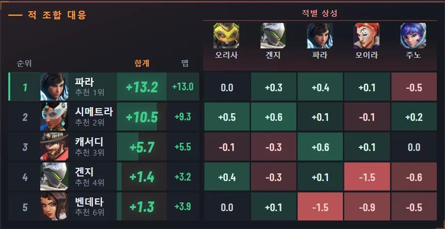
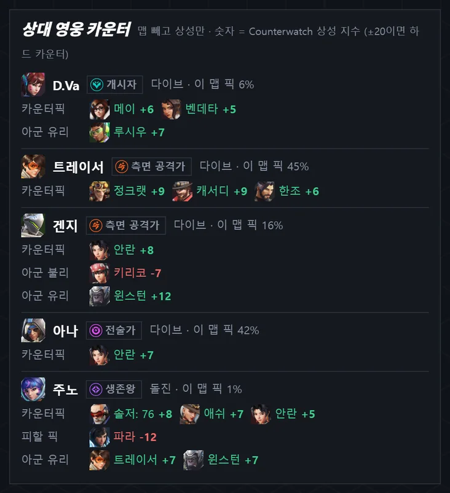
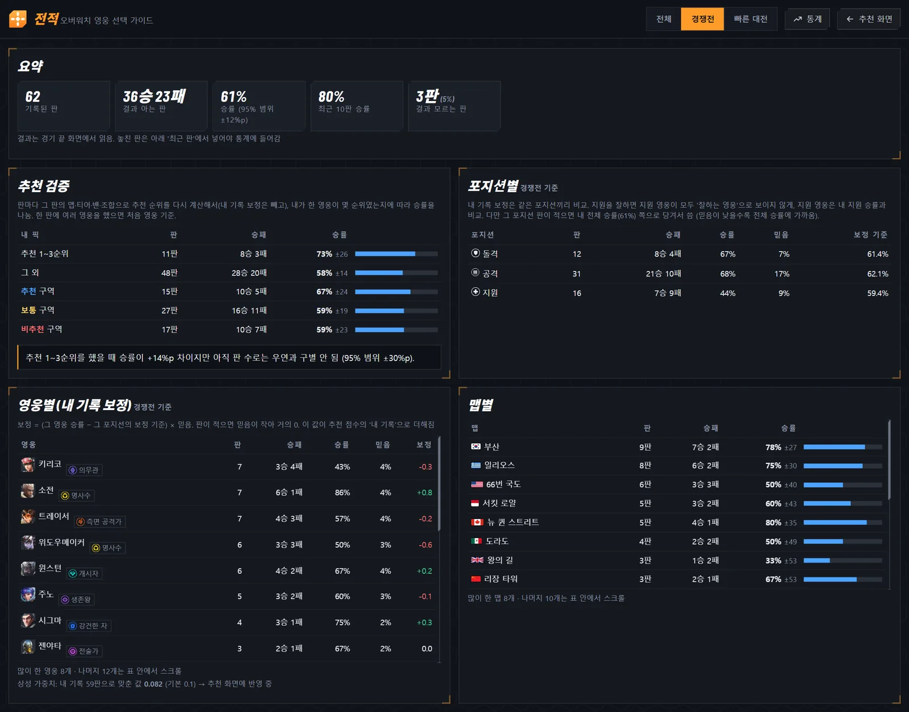
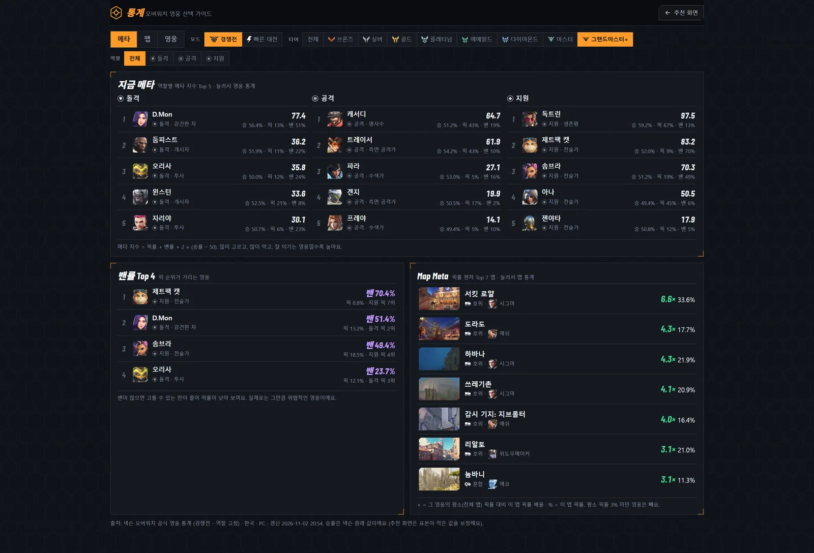

판이 진행되는 대로 알아서
켜 두기만 하면 돼요. 정보가 하나씩 들어올 때마다 추천이 다시 계산돼요.
- 맵 · 내 영웅선호 영웅 선택·영웅 선택 화면에서 맵과 내 영웅을 읽어요.
- 밴 · 양 팀 조합점수판(Tab)을 1~2초 누르면 대기실 금지까지 밴 5명과 아군·적군 영웅을 읽어요.
- 영웅 · 카운터픽 추천이 맵·티어 승률에 상성·시너지·조합 성향을 더해 순위를 매겨요.
- 승패 기록경기가 끝나면 결과를 읽어 전적에 남기고, 내 기록도 점수에 반영해요.
이런 걸 해 줘요
적 조합 카운터픽
상대 5명을 알면 내 포지션 영웅마다 각 적에게 얼마나 강한지 칸으로 보여 줘요. 초록일수록 유리하고, 빨강일수록 불리해요.
- 합계 순으로 상성이 좋은 영웅을 위에
- 가장 까다로운 적과 그 적을 잡는 카운터픽
- 적 영웅마다 피할 픽 · 아군 유리/불리까지


게임 위 오버레이
게임 화면 구석에 1~3순위와 내 영웅 점수, 상대 성향과 맞설 성향, 조심할 적을 작게 띄워요.
- Ctrl+Shift+O로 켜고 끄기
- 영웅 선택·점수판일 때만 보이게 할 수도 있어요
- 게임에 아무것도 주입하지 않는 일반 창

전적과 추천 검증
판마다 맵·결과·내 픽·밴·양 팀을 얼굴 칸으로 남기고, 그 판에서 가장 좋았을 영웅과 내 영웅의 순위를 함께 보여 줘요.
- 추천 1~3순위로 했을 때와 아닐 때 승률 비교
- 영웅별 · 맵별 승률, 포지션별 등급 범위 변화
- 잘못 나뉜 판 합치기, 결과 직접 고치기

메타 · 맵별 통계
티어·역할별 지금 메타 영웅, 밴률 높은 영웅, 맵마다 유난히 많이 나오는 영웅을 한눈에 봐요. 맵을 고르면 그 맵의 영웅별 픽률·승률·밴률이 나와요.

알아서 최신 버전
새 버전이 나오면 알림이 뜨고, 자동 업데이트를 켜 두면 오버워치를 쉬는 동안 알아서 받아 다시 켜요. 전적과 설정은 그대로예요.

설치는 파일 하나
Windows 10 · 11 (64비트)에서 동작해요. 필요한 구성 요소는 처음 한 번 자동으로 설치돼요.
- OW-MapPicker.bat 내려받기항상 최신 버전으로 받아져요.
- 받은 파일 더블클릭설치 · 업데이트 · 실행이 자동으로 진행되고, 바탕 화면에 바로가기가 생겨요.
- 브라우저에 추천 화면이 열리면 끝처음 한 번은 1~3분 걸려요. 다음부터는 바탕 화면 바로가기로 켜요.
| 처음 실행할 때 나타날 수 있는 창 | 누를 것 |
|---|---|
| 브라우저의 "흔하지 않은 파일" 경고 | 유지 |
| 파란색 "Windows의 PC 보호" 창 | 추가 정보 → 실행 |
| 관리자 확인 창 (한국어 글자 인식 기능이 없는 PC만) | 예 |
zip으로 직접 설치하려면 OW-MapPicker.zip을 받아 압축을 풀고 start.bat을 실행하세요. 자세한 방법은 사용법에 있어요.
자주 묻는 질문
무료인가요?
네, 무료예요. 개인이 만든 비공식 도구이고 광고나 결제가 없어요.
계정 정지 위험은 없나요?
게임 파일을 읽거나 고치지 않고, 게임에 아무것도 주입하지 않아요. 화면을 캡처해 글자와 그림만 인식하고, 오버레이도 게임 위에 떠 있는 일반 창이에요. 다만 블리자드가 공식으로 허용한 도구는 아니에요.
어떤 통계로 추천하나요?
넥슨 오버워치 공식 영웅 통계(한국 · PC)의 맵·티어별 승률과 픽률, Counterwatch의 영웅 상성·시너지를 써요. 경기가 적은 값은 표본 보정을 거쳐요. 계산 방법은 프로그램 화면의 '점수는 어떻게 계산하나요?'에서 볼 수 있어요.
오버레이가 안 보여요.
오버워치 화면 모드를 전체 창 모드로 바꿔 주세요 (설정 › 비디오 › 화면 모드). 전체 화면(독점) 모드에서는 다른 창이 게임 위에 보이지 않을 수 있어요.
휴대폰으로도 볼 수 있나요?
네. 프로그램 화면 위쪽 설정 → 폰으로 켜고, 표시되는 주소를 같은 Wi-Fi의 휴대폰 브라우저에서 열면 돼요.
내 전적이 밖으로 전송되나요?
아니요. 전적과 학습 데이터는 프로그램 폴더 안에만 저장돼요. 인터넷은 통계·영웅 그림·새 버전을 받을 때만 써요.
다음 판부터 써 보세요
파일 하나 받아 더블클릭하면 끝이에요.